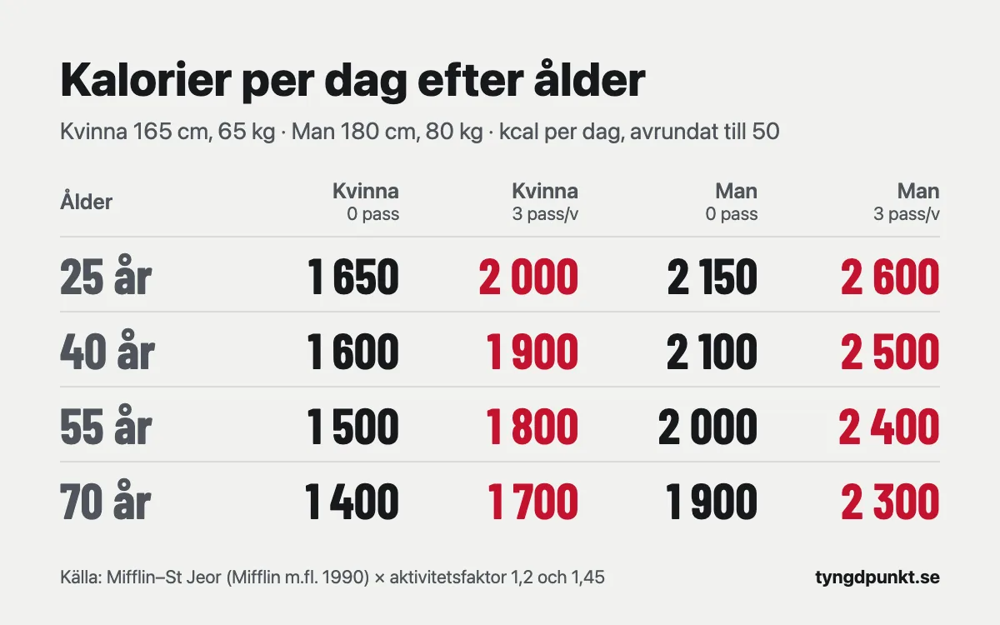

Hur många kalorier per dag behöver du?
En vuxen kvinna behöver ungefär 1 700–2 500 kcal per dag och en vuxen man ungefär 2 100–3 200 kcal, enligt Livsmedelsverkets referensvärden. Var i spannet du hamnar beror på ålder, storlek och hur mycket du rör dig. En kvinna på 65 kg som tränar tre pass i veckan landar till exempel kring 1 800–2 000 kcal, beroende på ålder.
Kalkylatorn visar uträkningen steg för steg.
Till kalkylatornHur många kalorier per dag behöver kvinnor och män?
Livsmedelsverket har tagit fram referensvärden för energi utifrån de nordiska näringsrekommendationerna (NNR 2023). Värdena är avrundade till närmaste hundratal och gäller tre nivåer av fysisk aktivitet: låg, medel och hög.
| Ålder | Kvinna, låg | Kvinna, medel | Kvinna, hög | Man, låg | Man, medel | Man, hög |
|---|---|---|---|---|---|---|
| 18–24 år | 2 000 | 2 200 | 2 500 | 2 500 | 2 800 | 3 200 |
| 25–50 år | 1 900 | 2 200 | 2 400 | 2 400 | 2 700 | 3 000 |
| 51–70 år | 1 700 | 2 000 | 2 200 | 2 200 | 2 500 | 2 800 |
| Över 70 år | 1 700 | 2 000 | 2 200 | 2 100 | 2 400 | 2 700 |
Alla siffror är kcal per dag. Låg, medel och hög motsvarar ett aktivitetstal på 1,4, 1,6 och 1,8. Det betyder att du gör av med 1,4–1,8 gånger så mycket energi som kroppen gör av med i vila.
Tabellen tar inte hänsyn till din längd och vikt. Livsmedelsverket skriver själva att värdena är ungefärliga och att det inte finns någon formel som kan räkna ut en persons exakta energibehov. En kvinna på 155 cm och en på 180 cm hamnar i samma ruta men behöver inte samma mängd mat. Därför är det bättre att räkna på sina egna mått.
Hur räknar man ut sitt eget kaloribehov?
Det görs i två steg. Först räknar man ut vad kroppen gör av med i vila, och sedan multiplicerar man med en faktor för hur aktiv man är.
Steg 1: vilan. En av de mest använda formlerna är Mifflin–St Jeor från 1990. Den togs fram genom att forskarna mätte vilometabolismen hos 498 friska vuxna i åldrarna 19–78 år, både normalviktiga och personer med fetma:
- Kvinnor: 10 × vikt (kg) + 6,25 × längd (cm) − 5 × ålder − 161
- Män: 10 × vikt (kg) + 6,25 × längd (cm) − 5 × ålder + 5
Med vilan menas det kroppen gör av med när du ligger stilla en hel dag: hjärta, hjärna, andning och att hålla värmen.
Steg 2: aktiviteten. Vilan multipliceras med en faktor. Kalkylatorn på sajten räknar så här:
| Träningspass per vecka | Faktor |
|---|---|
| 0 | 1,2 |
| 1–2 | 1,4 |
| 3 | 1,45 |
| 4 | 1,5 |
| 5 eller fler | 1,55 |
Räkneexempel. Sara är 27 år, 168 cm lång, väger 63 kg och styrketränar tre pass i veckan.
- Vilan: 10 × 63 + 6,25 × 168 − 5 × 27 − 161 = 630 + 1 050 − 135 − 161 = 1 384 kcal.
- Med träningen: 1 384 × 1,45 = 2 007 kcal.
- Avrundat till närmaste 50: 2 000 kcal per dag för att ligga kvar på samma vikt.
Det stämmer bra med Livsmedelsverkets mellannivå för kvinnor i hennes ålder, som är 2 200 kcal. Sara är lite lättare än snittet och hamnar därför något lägre.
Du kan räkna ut ditt kaloribehov med samma formel. Kalkylatorn visar både vilan och det du gör av med totalt.

Så här ser det ut för en kvinna på 165 cm och 65 kg och en man på 180 cm och 80 kg, uträknat med kalkylatorns formel:
| Ålder | Kvinna, 0 pass | Kvinna, 3 pass | Man, 0 pass | Man, 3 pass |
|---|---|---|---|---|
| 25 år | 1 650 | 2 000 | 2 150 | 2 600 |
| 40 år | 1 600 | 1 900 | 2 100 | 2 500 |
| 55 år | 1 500 | 1 800 | 2 000 | 2 400 |
| 70 år | 1 400 | 1 700 | 1 900 | 2 300 |
Siffrorna är kcal per dag, avrundade till närmaste 50 som i kalkylatorn.
Hur många kalorier förbränner man per dag utan träning?
Livsmedelsverket delar upp energibehovet i tre delar: det kroppen gör av med i vila, energin som går åt till att bryta ner maten och den fysiska aktiviteten. Den första delen är störst för de flesta.
För Sara blir vilan 1 384 kcal. Tränar hon inte alls räknar kalkylatorn med faktorn 1,2, och då blir det 1 384 × 1,2 = 1 661 kcal, avrundat 1 650 kcal per dag. Med tre pass i veckan blir det 2 000 kcal. Träningen och vardagsrörelsen står alltså för ungefär 350 kcal om dagen i hennes fall, räknat på faktorerna.
Faktorn 1,2 är lägre än Livsmedelsverkets lägsta nivå på 1,4, så kalkylatorn räknar försiktigt för den som inte tränar. Går du mycket eller har ett fysiskt jobb gör du av med mer än så.
Behöver man färre kalorier när man blir äldre?
Ja, men inte särskilt mycket per år. I Mifflin–St Jeor minskar vilan med 5 kcal för varje år. Mellan 25 och 55 år blir det 150 kcal mindre i vila, allt annat lika. Med faktorn för tre pass blir skillnaden ungefär 200 kcal per dag, vilket syns i tabellen ovan.
Livsmedelsverkets referensvärden visar samma sak. En kvinna med medelhög aktivitet går från 2 200 kcal mellan 25 och 50 år till 2 000 kcal mellan 51 och 70 år. För män är det 2 700 respektive 2 500 kcal.
Är du 50 eller 60 år räknar du alltså med samma formel som alla andra. Längd, vikt och hur mycket du rör dig betyder mer än åldern. Hur mycket protein du behöver räknas däremot per kilo, oavsett ålder. Det går vi igenom i hur mycket protein per dag.
Frankenfield och kollegor gick 2005 igenom formlerna i en systematisk översikt. De påpekar att äldre personer var underrepresenterade både när formlerna togs fram och när de testades. Siffrorna kan därför stämma sämre ju äldre du är.
Hur många kalorier per dag för att gå ner i vikt?
Då ska du äta mindre än du gör av med. Kalkylatorn räknar med att ett kilo kroppsfett motsvarar ungefär 7 700 kcal. Siffran kommer från den gamla tumregeln om 3 500 kcal per pund, som motsvarar 32,2 MJ per kilo.
Vill du gå ner 0,5 kg i veckan blir det 0,5 × 7 700 ÷ 7 = 550 kcal mindre per dag.
Räkneexempel. Johan är 41 år, 182 cm, väger 98 kg och tränar fyra pass i veckan.
- Vilan: 10 × 98 + 6,25 × 182 − 5 × 41 + 5 = 1 917,5 kcal.
- Med träningen: 1 917,5 × 1,5 = 2 876 kcal, avrundat 2 900 kcal.
- För 0,5 kg i veckan: 2 876 − 550 = 2 326 kcal, avrundat 2 350 kcal per dag.
Hur fort är lagom? Helms och kollegor gick 2014 igenom forskningen om att gå ner i fett och samtidigt behålla musklerna. De rekommenderar en takt på ungefär 0,5–1 procent av kroppsvikten i veckan. För Johan är det 0,5–1 kg i veckan.
Två saker gör att 7 700 kcal inte stämmer exakt. Kevin Hall visade 2008 att tumregeln ungefär stämmer för personer med mycket kroppsfett, men att den överskattar hur stort underskott som krävs för den som har mindre fett. Och Helms och kollegor beskriver att kroppen anpassar sig när du äter mindre, så att du gör av med mindre energi. Kaloribehovet du börjar med behöver därför ofta justeras efter några veckor.
Varför stämmer inte kaloribehovet för mig?
Formeln ger ett snitt för många människor, inte ditt exakta behov. Frankenfield och kollegor jämförde 2005 de vanligaste formlerna för vilometabolism i en systematisk översikt. Mifflin–St Jeor var den formel som oftast hamnade inom 10 procent av det uppmätta värdet, både hos normalviktiga och hos personer med fetma, och den hade minst felspridning. Men författarna skriver också att det kan bli märkbara fel för enskilda personer.
10 procent av Saras 2 000 kcal är 200 kcal. Hennes verkliga behov kan alltså ligga mellan 1 800 och 2 200 kcal, och ibland utanför det. Aktivitetsfaktorn är dessutom en grov gissning. Två personer med tre pass i veckan kan röra sig väldigt olika resten av dagen.
Det säkraste sättet att få reda på ditt behov är att mäta det på dig själv:
- Ät ungefär lika mycket varje dag och skriv upp hur mycket.
- Väg dig några gånger i veckan under tre veckor.
- Står vikten still äter du ungefär ditt behov. Går den upp eller ner vet du åt vilket håll du ligger fel.
Livsmedelsverket säger samma sak: kroppsvikten och hur den utvecklas är det som visar om du är i balans.
Har du en sjukdom, är gravid eller har eller har haft en ätstörning ska du inte räkna ut ditt kaloribehov på egen hand. Prata med vården.
I Tyngdpunkt är kaloribehovet en startgissning. En gång i veckan stäms det av mot hur din vikt faktiskt rör sig, och du får ett förslag på ändring först när du följt planen och vikten ändå går åt fel håll.
Vanliga frågor
Hur många kalorier per dag behöver en kvinna?
Enligt Livsmedelsverket 1 700–2 500 kcal, beroende på ålder och hur aktiv hon är. En kvinna på 165 cm och 65 kg som tränar tre pass i veckan behöver ungefär 2 000 kcal vid 25 år och 1 800 kcal vid 55 år.
Hur många kalorier per dag behöver en man?
Enligt Livsmedelsverket 2 100–3 200 kcal. En man på 180 cm och 80 kg som tränar tre pass i veckan behöver ungefär 2 600 kcal vid 25 år och 2 400 kcal vid 55 år.
Vad är skillnaden mellan kalorier och kcal?
I vardagen betyder de samma sak. Det som står som kalorier på förpackningar och i kalkylatorer är kilokalorier, kcal. En kcal är 4,184 kJ.
Räknas träningen med i kaloribehovet?
Ja, i aktivitetsfaktorn. Därför ska du inte lägga till kalorierna från en träningsklockan ovanpå. Då räknas träningen två gånger.
Hur ofta ska man räkna om kaloribehovet?
När vikten har ändrats några kilo, eller när du tränar mer eller mindre än förut. Varje kilo du går ner sänker vilan med 10 kcal enligt formeln.
Källor
- Livsmedelsverket. Energi, kalorier (referensvärden för energiintag baserade på NNR 2023, tabell 8). livsmedelsverket.se
- Mifflin MD, St Jeor ST, Hill LA m.fl. (1990). A new predictive equation for resting energy expenditure in healthy individuals. The American Journal of Clinical Nutrition, 51(2), 241–247. Europe PMC
- Frankenfield D, Roth-Yousey L, Compher C (2005). Comparison of predictive equations for resting metabolic rate in healthy nonobese and obese adults: a systematic review. Journal of the American Dietetic Association, 105(5), 775–789. Europe PMC
- Hall KD (2008). What is the required energy deficit per unit weight loss? International Journal of Obesity, 32(3), 573–576. Europe PMC
- Helms ER, Aragon AA, Fitschen PJ (2014). Evidence-based recommendations for natural bodybuilding contest preparation: nutrition and supplementation. Journal of the International Society of Sports Nutrition, 11, 20. Europe PMC